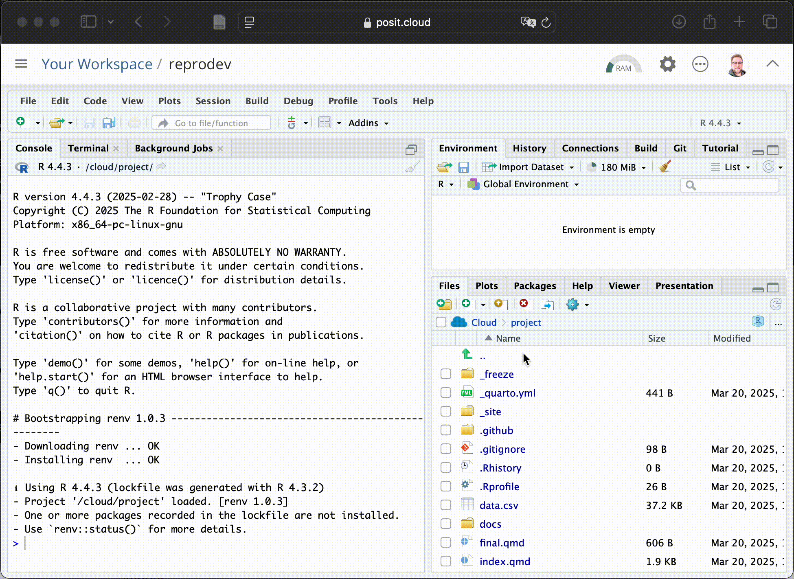
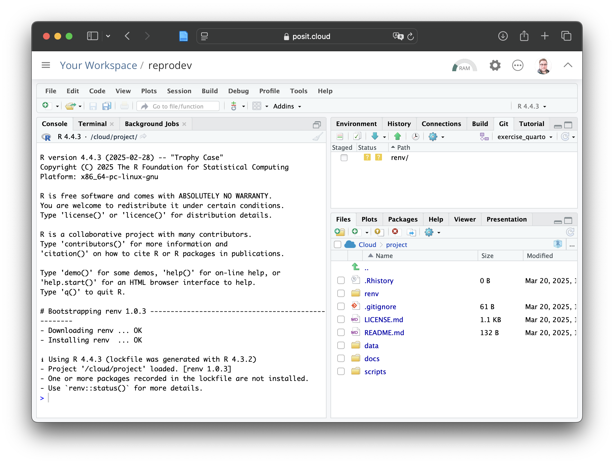

install.packages("mice")
install.packages("ggmice")
install.packages("ggplot2")
install.packages("magrittr")Tutorial 1 (Posit Cloud)
Reproducible programming with Quarto
Gerko Vink ![]()
Learning objectives in the tutorials
This is a group project. Form groups of 3-4 people. Each group will work together on a mode of collaborative and open development.
- Tutorial 1: Create a group research compendium
- Tutorial 2: Publish the group compendium by means of open development standards and create a reproducible group website
- Tutorial 3: Create an individual FAIR R package and commit it to the group page, together with your group projects.
We are going to use the Quarto publishing environment to create a reproducible research compendium. This is the first of two Quarto-related tutorials. In this tutorial, we will set up the project structure and fill the documents and create a reproduvible research compendium. The structure of this compendium is based on these workshop materials. In the second tutorial, we will publish the compendium and create a reproducible website with Quarto.
Open and collaborative
This course has its own repository at GitHub where you can find all sources for the materials, the slides, the tutorials and the rendered course page. The materials in this course are fully open, which would allow anyone to take, borrow and modify these materials to their liking and even contribute to the source of these materials directly. If you look carefully to the right margin of this page, you see a link to edit this page. This link will take you directly to the GitHub source of this page.
Course materials
The tutorial materials consist of a project structure (borrowed from here) and dummy scripts that we will use, fill and later on publish.
We will work in R, althought the materials and flow would be easily applicable to Python. The reason for the focus on R is to set up a development mode for the next session that I will give on May 9. Because we are focusing on development in R, I will outline the RStudio IDE workflows. It is not hard to adapt these workflows to e.g. VScode or Jupyter Lab.
That said, the materials are available in this branch of the course repository. You can download the materials by following these steps:
- Create a GitHub account here if you do not already have one.

Once you have created a GitHub account, go to Posit Cloud and sign in with your GitHub account.
A window with RStudio opens. Click on the
New Projectbutton in the top right corner and chooseNew Project from Git Repository.
 4. Wait for the project to deploy. When the RStudio window appears, go to the git pane and choose the
4. Wait for the project to deploy. When the RStudio window appears, go to the git pane and choose the exercise_quarto branch.

The materials in this branch should look like this:
reprodev-exercise_quarto
├── data
│ └── data.csv
├── docs
│ └── references.bib
└── scripts
│ └── read_data.R
├── LICENSE.md
└── README.mdThis structure you can see in the Files pane in the RSudio IDE.

Let’s start
If you’ve followed the above steps, you can start creating the Quarto document that your group will work on in this tutorial.
Tip 1: Install the required packages
We will use some packages later on. It may be that you have not installed them to your machine, yet. So let’s do that now:
1. Create an RStudio Project
There is no need for this in Posit Cloud as the project is already created for you when you’ve deployed the GitHub repository.
2. Document your project for reproducibility
Your project already contains pre-made folders, a README file and a License. Open the README.md file and fill it with a few relevant details, for example:
- Purpose and contents of the project
- Your names (Authors)
- The date of creation
- Etc.
3. Create a Quarto document for your manuscript.
- In RStudio, click File -> New File -> Quarto Document
- Give your document a title, such as
reprodev-exercise_quarto. - Add yourselves as authors. A great way to do this is by including some persistent digital identifier, like an ORCID iD. See e.g. the following code block
authors:
- name: "Gerko Vink"
orcid: "0000-0001-9767-1924"
- name: "Your Name"
orcid: "0000-0000-0000-0000"
- name: "Your Name"
orcid: "0000-0000-0000-0000"
- name: "Your Name"
orcid: "0000-0000-0000-0000"- For now, the default output format (HTML) and engine (knitr) are fine.
- Uncheck the Use visual markdown editor option.
- Click Create. A new Quarto document opens.
4. Render the Quarto document to HTML
- Save the Quarto document in the
docsfolder within thereprodev-exercise_quartofolder.
Give the file a clear name, without using spaces. For example,reprodev-exercise_quarto.qmdormy-manuscript.qmd. - Once everything has been saved correctly, click the Render button in the menu bar.
- The rendered HTML copy of your document will appear in your web browser or alongside the editor in RStudio. You will also see a
yourchosenfilename.htmlfile appear in thedocsfolder.
Add some syntax
Recreate the following paragraph in your Quarto document using Markdown:
Meet Quarto
Quarto enables you to weave together content and executable code into a finished document.
To learn more about Quarto see https://quarto.org.
Meet the boys data
The boys data from the mice package is a random sample of 10% from the cross-sectional data used to construct the Dutch growth references 1997. Variables gen and phb are ordered factors. reg is a factor.
The following table shows the first 6 rows of the `boys` data.What It Should Look Like
Below is an image of the rendered output. Try to recreate it in your Quarto document.

Links you need
- You can find the link to the development repo of the
micepackage here: https://github.com/amices/mice - The link to the
micelogo is: https://amices.org/mice/logo.png
{kind=link}
Don’t struggle for too long
Expand to see the solution
# Meet `Quarto`
`Quarto` enables you to weave together content and executable code into a finished document.
To learn more about Quarto see [https://quarto.org](https://quarto.org).
# Meet the `boys` data
The `boys` data from the [`mice`](https://github.com/amices/mice){.pkg} package in [`R`]{.proglang} is a random sample of 10% from the cross-sectional data used to construct the Dutch growth references 1997. Variables `gen` and `phb` are ordered factors. `reg` is a factor.
The following table shows the first 6 rows of the `boys` data.
:::: {.columns}
::: {.column width="60%"}
```{r}
head(mice::boys)
```
:::
::: {.column width="40%"}
{fig-align="right" width=60%}
:::
::::Exercise
The following panel treats several advanced options that you can use in your Quarto document. Follow them from left to right.
You can side load (aka source) scripts by using code chunks. An R code chunk has the form of:
```{r}
#| chunk option 1
#| chunk option 2
```To side-load a code file use:
```{r}
#| file: "your-script.R"
#| eval: true
```The file option is the name of the file you want to load. The eval option is a boolean that determines if the code should be evaluated.
Although Quarto unifies code and text, it is still a good idea to separate (parts of) the code from the text. Modular coding makes your documents easier to understand, read, maintain and debug.
Add the code file
scripts/read_data.Rto your document to read in theboysdata.In a new code chunk, ask for the
head(boys)to verify that your code sourcing is working.
Now let’s start with a quick investigation into the boys data and its missingness.
- Add the following syntax with code block to your
Quartodocument:
Not every value in the `mice::boys` set is observed. This may pose problems with the analysis of the `boys` data. To get an idea about the problem, we can use missing data patterns. created the [`ggmice`](https://github.com/amices/ggmice){.pkg} package to create a [`ggplot2`](https://ggplot2.tidyverse.org){.pkg} [@ggplot2] type plot of the missing values in the `boys` data.
```{r mdpattern}
library(mice)
library(ggmice)
# visualize ggplot2-like missing data pattern
mice::boys |>
ggmice::plot_pattern()
```The above syntax uses the Quarto referencing environment to create a reference for the ggplot2 package.
- For the referencing to work, you need to add the
references.bibfile to your project. You can find the file in the docs folder of your project. Add the following line to the YAML front matter of your Quarto document.
bibliography: references.bibFor more information about bibliographic data sources and Quarto, see the Quarto Citation reference.
Find the reference for
R, for packageggmiceand for packagemiceHINT: You can use the\citation()function inRAdd the references to text, where the reference for
ggmiceshould take the form: Hanne Oberman (2023) and the reference for the others should take the form (Author, Year).
The renv package is a tool for creating reproducible environments in R. It is a good practice to use renv to manage the packages that you use in your project.
If you have not yet installed the necessary packages, yet, it may be wise to do so now. See Tip 1 for the code to install the necessary packages.
Start renv
renv::init()renv::init() adds three new files and directories to your project:
- The project library, renv/library, is a library that contains all packages currently used by your project This is the key magic that makes
renvwork: instead of having one library containing the packages used in every project,renvgives you a separate library for each project. This gives you the benefits of isolation: different projects can use different versions of packages, and installing, updating, or removing packages in one project doesn’t affect any other project. - The lockfile,
renv.lock, records enough metadata about every package that it can be re-installed on a new machine. We’ll come back to the lockfile shortly when we talk aboutrenv::snapshot()andrenv::restore(). - A project
Rprofile,.Rprofile. This file is run automatically every time you startR(in that project), andrenvuses it to configure yourRsession to use the project library. This ensures that once you turn onrenvfor a project, it stays on, until you deliberately turn it off.
The next important pair of tools are renv::snapshot() and renv::restore():
snapshot() updates the lockfile with metadata about the currently-used packages in the project library. This is useful because you can then share the lockfile and other people or other computers can easily reproduce your current environment by running restore(), which uses the metadata from the lockfile to install exactly the same version of every package.
This pair of functions gives you the benefits of reproducibility and portability: you are now tracking exactly which package versions you have installed so you or others can recreate them on other machines.
The flexibility of Quarto is to add in-line code. This is a great way to add dynamic content to your text that is automatically updated from the data and analyses.
- Add the following text with in-line code to your document:
# Descriptions of the `boys` data
The `boys` data contains `r nrow(boys)` rows and `r ncol(boys)` columns. In total there are `r sum(is.na(boys))` missing values in the `boys` data, with the highest number of missing values in the `r names(which.max(apply(mice::boys, 2, function(x) sum(is.na(x)))))` column. The last in-line code chunk makes it painfully clear why piping in coding is so essential for the readability of your code. The flexibility about the in-line code is that it is automatically updated from the data and analyses - so as soon as one or the other changes, the output is updated accordingly when the Quarto document is rendered.
Next tutorial
You will need your group’s Quarto document and the research compendium for the next tutorial. You can save it by following the below procedure.